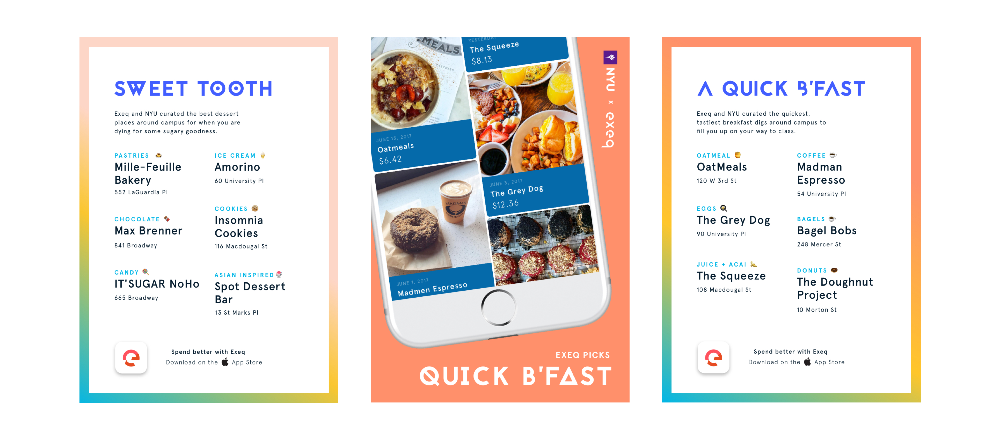
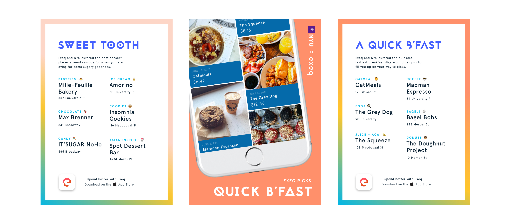
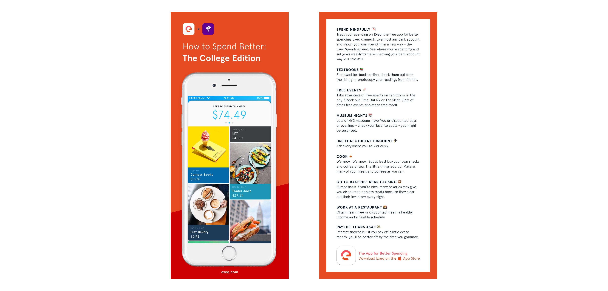
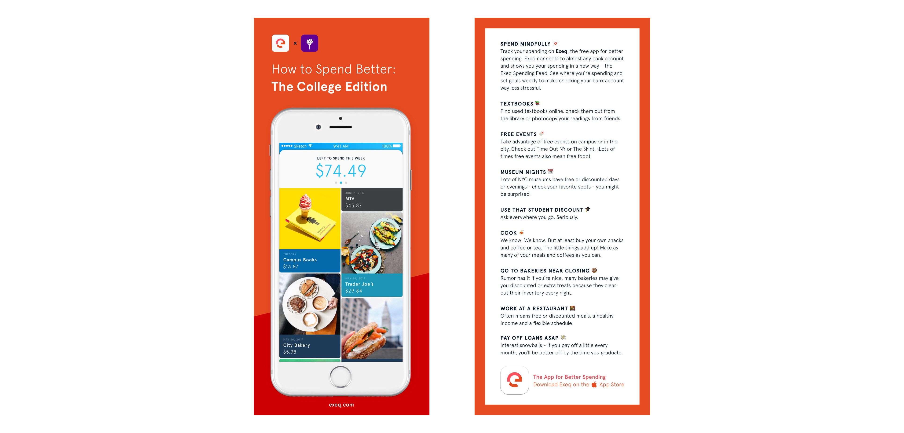

As the design intern at fintech startup
Exeq, I collaborated with
Samantha Clark to
craft a joyful product experience and an energetic brand.
As we
prepared for launch in late August, I developed product strategies,
conducted focus groups, polished up the UI, produced ads for Facebook
and Instagram, wrote 400+ punchy descriptions to be used in the app and
designed print marketing assets for NYU Welcome Week.

 

 
